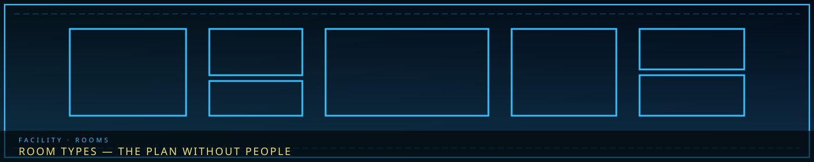

/// RAPID JUMP:
STATUS: ARCHIVE VERIFIED |
CLEARANCE: LEVEL-4 OVERSIGHT |
PROTOCOL: REVERIE DIRECTORATE
ARTICLE
DISCUSSION
SOURCE
HISTORY
YEAR 4,238 · DAWN OF HOPE
DEPARTMENTS RECORD
Facility Architecture & Room Types
Contents
“Boxes on a plan. Doors as gaps. No one is seated in them.”

Overview
Overview
THE_HAND_DR_LAYOUT is gold Floor 1 full-width, red Floor 2 full-width, Floor 3 left wing cyan-joined to Floor 8 right wing, four equal hanging shafts Floors 4–7. Floor 8 is a wing on Floor 3's storey. Floor 1's armory is DSE. Named Vigil lives on Floor 2's register and Floor 3's frames.
Each floor of The Hand of Change contains specific room types. Rooms are connected by Han-corridors — passages lined with Han-crystal that pulse with the facility's rhythm.
"Every room in The Hand has a purpose. Every purpose has a cost."
Universal Room Types
These rooms exist on every floor (1-8):
| Room Type | Description | Capacity |
|---|---|---|
| Main Room | The central hub of each floor — where personnel gather, briefings happen, and operations are coordinated | 20-50 personnel |
| Han-Corridors | Passages connecting rooms — lined with Han-crystal, warm to the touch | N/A (transit) |
| Elevator Hubs | Vertical transport between floors — Han-powered lifts | 10 per hub |
| Side Rooms | Storage, rest areas, medical stations | Varies |
Floor 1: Neutral — Room Types
| Room | Description | Function |
|---|---|---|
| The Director's Office | The Director's personal space — sparse, heavy, warm | Decision-making; historical access to the concealed Cycle-era Absolvohan reserve beneath Floor 1 |
| The Secretary's Station | Where the Secretary coordinates — screens, communication arrays | Inter-Field coordination, scheduling |
| The Council Chamber | Meeting room for Council visits — imposing, formal | Council meetings, policy decisions |
| The Common Hall | Large gathering space — meals, rest, community | Personnel rest, social interaction |
| The Infirmary | Medical facility — Han-treatment, Fracture assessment | Healing, Fracture monitoring |
| The Armory | DSE checkout and transit — Default Standard Equipment, not Named Vigil | Equipment checkout, maintenance |
Floor 2: The Maw's Keep — Room Types
| Room | Description | Function |
|---|---|---|
| Containment Cells | Individual chambers for Sorrow Entities — Han-crystal walls, suppression fields | Entity holding — each cell tailored to specific entity |
| The Maw's Edge | Observation point at The Maw's perimeter — thick glass, monitoring equipment | Monitoring The Maw, communicating with Dekan |
| Breach Response Staging | Equipment room + briefing area for breach teams | Preparation for containment failures |
| Entity Processing | Initial assessment room — Sorrow Gauges, classification tools | New entity intake, classification |
| The Holding Yard | Large open space for entity containment overflow | Emergency holding, entity interaction testing |
| The Whispering Gallery | Sound-dampened room where entity vocalizations are recorded | Entity communication study |
Floor 3: The Extraction Hall — Room Types
| Room | Description | Function |
|---|---|---|
| Extraction Chambers | Individual rooms with extraction rigs — Han-crystal frames, resonance emitters | M.A.W. extraction from entities |
| Resonance Scanning | Room with compatibility measurement equipment | Entity-person resonance testing |
| M.A.W. Testing Grounds | Open space for testing extracted equipment | Equipment evaluation, combat testing |
| Bonding Rooms | Quiet, isolated rooms for M.A.W. bonding process | User-equipment bonding |
| The Refinery | Han-crystal processing — raw crystal to usable material | Echo processing, Han-crystal refinement |
| Equipment Storage | Vault for M.A.W. equipment — climate-controlled | M.A.W. storage, cataloguing |
Floor 4: The Insight Forge — Room Types
| Room | Description | Function |
|---|---|---|
| Research Laboratories | Individual labs for Han analysis — equipment, samples, documentation | Han research, entity study |
| The Classification Archive | Database room — Sorrow Classification System records | Entity classification, data storage |
| Sorrow Mapping Chamber | Room with Han-flow visualization equipment | Han-flow mapping, city structure analysis |
| Testing Chambers | Controlled environments for entity interaction experiments | Controlled entity testing |
| The Specimen Vault | Storage for Han samples, entity fragments, research materials | Sample storage |
| The Cartographer's Den | Yeonhwa's personal workspace — maps, lenses, flow charts | SED preparation, map analysis |
Floor 5: The Border Watch — Room Types
| Room | Description | Function |
|---|---|---|
| Watchtower Command | Communication and coordination center — maps, signals, reports | Zone E defense coordination |
| The Threshold Outpost | Forward operating base — equipment, supplies, briefings | Border operations staging |
| Desolate Entry Point | Controlled access to the wilderness — airlock-style doors | Desolate expeditions |
| Entity Containment (Overflow) | Containment for entities captured outside the facility | External entity holding |
| The Armory (Military) | Weapons, armor, tactical equipment | Military equipment storage |
| The War Room | Strategy room — maps, intelligence reports | Tactical planning |
Floor 6: The Deep Vault — Room Types
| Room | Description | Function |
|---|---|---|
| The Deep Archive | Classified records — lowest level, most secure | Cheongula records, forbidden knowledge |
| Memory Vaults | Crystallized Echo storage — climate-controlled | Memory preservation |
| The Sealed Room | Records requiring Council approval — triple-locked | Highest-security records |
| The Final Door | Ancient door — sealed, unknown contents | ??? |
| The Reading Room | Quiet space for archive research | Research, documentation |
| The Preservation Lab | Memory stabilization, Echo repair | Memory conservation |
Floor 7: The Shadow Corps — Room Types
| Room | Description | Function |
|---|---|---|
| Safe Houses | Multiple disguised rooms across the floor — different identities | Field agent rest, identity switching |
| Intelligence Processing | Analysis room — maps, reports, surveillance | Intelligence analysis |
| The Communication Hub | Encrypted communication arrays | Field agent contact |
| The Disguise Room | Masks, clothing, identity tools | Infiltration preparation |
| The Armory (Covert) | Stealth weapons, infiltration tools | Covert equipment |
| The Debriefing Room | Secure room for agent debriefings | Post-mission analysis |
Floor 8: The Gate Watch — Room Types
| Room | Description | Function |
|---|---|---|
| The Gate Observation Post | Overlooks the Exile's Gate — thick glass, monitoring equipment | Before return: watches Xyan and Gate changes. After return: watches passage, approach, and both sides of the boundary. |
| The Exile's Station | Dedicated communication and field-contact station | Before return: receives Xyan's compressed warnings. After return: Xyan's external-contact and route-command station. |
| Signal Analysis | Room for decoding external Han-wave messages | Interprets warnings, compares outside reports, and tracks changed Han-flow. |
| The Contemplation Room | Quiet space separated from continuous Gate monitoring | Reflection, personnel decompression, and post-arrival stabilization. |
| The Archive (Gate) | Records of Gate activity, exile decisions, warnings, arrivals, and responses | Preserves not only what reached the R.D., but what the R.D. did after receiving it. |
Room Interaction
Moving between rooms:
- Personnel move through Han-corridors — passages that pulse with the facility's rhythm
- Elevator Hubs connect floors — Han-powered lifts
- Main Rooms serve as home base — personnel return after tasks
Room effects:
- Containment Cells suppress Han — entities are calmer inside
- Extraction Chambers amplify resonance — M.A.W. extraction is more effective
- The Deep Vault suppresses emotion — visitors feel numb inside
- The Gate Observation Post creates unease — something about the Gate affects nearby rooms
Overview
Reverie Directorate's facility is built in the stylized shape of a hand — the Palm at the top, four departmental Fingers extending downward, and the separate Gate Watch Wing occupying the side position.
"The hand that holds the sorrow. The fingers that reach into the dark. The change that comes from within."
Structure:
- The Palm (Floors 1-3) — The main facility. Common areas, administration, core operations.
- The Fingers (Floors 4-7) — Four individual department floors extending downward.
- The Wing (Floor 8) — Attached to the right side of Floor 3. A separate section for the Gate Watch.
`
╔═══════════════════╗
║ FLOOR 1 ║
║ THE HAND ║
║ OF CHANGE ║
║ NEUTRAL ║
║ (Common Area) ║
╠═══════════════════╣
║ FLOOR 2 ║
║ THE MAW'S KEEP ║
║ (Containment) ║
╠═══════════════════╣
║ FLOOR 3 ║
║ EXTRACTION HALL ║
║ (M.A.W.) ║
╠═════╦═════╦═════╦═════╦═════╣
║ F4 ║ F5 ║ F6 ║ F7 ║ F8 ║
║Insight║Border║Deep ║Shadow║Gate ║
║Forge ║Watch ║Vault║Corps ║Watch║
╚═════╩═════╩═════╩═════╩═════╝
FOUR FINGERS + GATE WING
`
The Palm (Floors 1-3)
Floor 1: Neutral (중립 층 — Jungnip Cheung)
What it is: The common area — where all Fields intersect. The Director's office. The Secretary's station. Meeting rooms. The main entrance.
Who is here: Director, Secretary, visitors, support staff
What happens here:
- Council meetings (when the Council visits)
- Inter-Field coordination
- Visitor processing
- The Director's office — historically linked to the concealed Cycle-era Absolvohan reserve beneath Floor 1; no current secret diversion continues
Floor 1 motto: "Where all hands meet."
Floor 2: The Maw's Keep (입구의 수호 — Ipgu-ui Suho)
Echo-Core: Containment Lead (Dekan)
What it is: Entity containment — the R.D.'s primary holding facility for Sorrow Entities.
Who is here: Containment Guards, Breach Response Teams, Maw Liaisons
What happens here:
- Entity containment — Sorrow Entities are held in specialized cells
- Breach response — teams stand ready for containment failures
- Entity processing — initial assessment and classification
- The Maw's Edge — observation point at The Maw's perimeter (connected to Zone B)
Floor 2 motto: "We hold what would devour."
Floor 3: The Extraction Hall (추출의 전당 — Chuchul-ui Jeondang)
Echo-Core: Extraction Lead (Zyrak)
What it is: M.A.W. extraction — the process of pulling equipment from contained entities.
Who is here: Extraction Technicians, Resonance Specialists, M.A.W. Testers
What happens here:
- M.A.W. extraction — pulling equipment from entities
- Resonance scanning — measuring entity-person compatibility
- M.A.W. testing — evaluating extracted equipment
- Equipment storage and distribution
Floor 3 motto: "From sorrow, strength."
The Fingers and Wing (Floors 4-8)
Floors 4–7 form four self-contained Fingers extending into the depths. Floor 8 is the separate Wing attached to the right of the Palm; it is not a fifth Finger.
Floor 4: The Insight Forge (통찰의 용광로 — Tongchal-ui Yonggwangno)
Echo-Core: Research Lead (Ayshuk)
What it is: Han research — understanding the city's sorrow mechanics.
Who is here: Han Researchers, Entity Analysts, Sorrow Cartographers
What happens here:
- Han analysis — studying the nature of Han and its properties
- Entity classification — the SCS database
- Sorrow mapping — Han-flow visualization
- Testing chambers — controlled entity interaction
Floor 4 motto: "Understanding is the first step to managing."
Floor 5: The Border Watch (경계의 감시 — Gyeonggye-ui Gamsi)
Echo-Core: Border Lead (Mellda)
What it is: External operations — defending against Outside Sorrow.
Who is here: Border Guards, Desolate Scouts, Entity Hunters
What happens here:
- Border defense — monitoring Zone E's perimeter
- Desolate reconnaissance — venturing into the wilderness
- Entity tracking — pursuing entities that breach from outside
- The Threshold Outpost — forward operating base
Floor 5 motto: "What lies beyond, we hold at bay."
Floor 6: The Deep Vault (깊은 금고 — Gippeun Geumgo)
Echo-Core: Archive Lead (Marjuk)
What it is: Deep archives — classified records, dangerous knowledge.
Who is here: Vault Keepers, Memory Archivists, Truth Seekers
What happens here:
- Deep archive — classified records, the Cheongula's true history
- Memory vaults — stored Echoes from the city's earliest days
- The Sealed Room — records requiring Council approval
- The Final Door — ???
Floor 6 motto: "Some truths must be buried. Others must be guarded."
Floor 7: The Shadow Corps (그림자 군단 — Geurimja Gundan)
Echo-Core: The Outsider (Ishall)
What it is: Field operations — reconnaissance, infiltration, intelligence.
Who is here: Field Agents, Intelligence Analysts, Infiltration Specialists
What happens here:
- Field operations — undercover work across all zones
- Intelligence processing — analyzing field reports
- Safe house management — maintaining the Shadow Network
- Mobile command — portable communication hub
Floor 7 motto: "We see what others cannot. We go where others will not."
Floor 8: The Gate Watch (문의 감시 — Mun-ui Gamsi)
Echo-Core: The Exile (Xyan)
What it is: Gate observation, external communication, route review, arrival assessment, and accountability for what the R.D. does after a warning reaches it.
Who is here: Gate Observers, Signal Interpreters, agents, clerks, technicians, maintenance staff, and one internal Field Commander.
Command chronology:
- Before Day 355: Xyan's physical Cyborg body is outside. The Field Commander runs internal operations while Floor 8 receives and records his warnings.
- After Day 355: Majin opens passage from inside. Xyan returns physically and can directly command the floor.
- Year 4,238: Gate Watch works with Border Watch and outside communities. It monitors danger without presuming every approach is an incursion.
What happens here:
- Gate and boundary observation
- Long-range signal interpretation
- Outside-community and field-team communication
- Route stabilization planning and return accountability
- Arrival, refusal, and response documentation
- Coordination with Mellda's Border Watch
Floor 8 motto: "We watch. We answer. We keep the route back."
The Hand — Summary
| Floor | Location | Name | Echo-Core | Purpose |
|---|---|---|---|---|
| 1 | Palm (top) | Neutral | Director + Secretary | Common area, administration |
| 2 | Palm (middle) | Maw's Keep | Containment Lead | Entity containment |
| 3 | Palm (bottom) | The Extraction Hall | Extraction Lead | M.A.W. extraction |
| 4 | Finger 1 (left) | The Insight Forge | Research Lead | Han research |
| 5 | Finger 2 | The Border Watch | Border Lead | External operations |
| 6 | Finger 3 | The Deep Vault | Archive Lead | Deep archives |
| 7 | Finger 4 (right) | The Shadow Corps | The Outsider | Field operations |
| 8 | Wing (right of Palm) | The Gate Watch | The Exile | Gate observation, external contact, and route accountability |
Historical Director secret: During the Cycle, the Absolvohan reserve was concealed beneath Floor 1. The final release transforms that program into the Hand of Hope; this is not a current hidden stockpile.
Mnemonic Generator note: The device was built into the Hand and created the historical Cycle as an unintended field effect. The reset has ended; whether the post-Cycle stabilization hardware can now be removed safely remains unspecified.
CANONICAL CROSS-LINKS & ATLAS CONNECTIONS
Room Types — The Hand of Change
Overview
Each floor of The Hand of Change contains specific room types. Rooms are connected by Han-corridors — passages lined with Han-crystal that pulse with the facility's rhythm.
"Every room in The Hand has a purpose. Every purpose has a cost."
Universal Room Types
These rooms exist on every floor (1-8):
| Room Type | Description | Capacity |
|---|---|---|
| Main Room | The central hub of each floor — where personnel gather, briefings happen, and operations are coordinated | 20-50 personnel |
| Han-Corridors | Passages connecting rooms — lined with Han-crystal, warm to the touch | N/A (transit) |
| Elevator Hubs | Vertical transport between floors — Han-powered lifts | 10 per hub |
| Side Rooms | Storage, rest areas, medical stations | Varies |
Floor 1: Neutral — Room Types
| Room | Description | Function |
|---|---|---|
| The Director's Office | The Director's personal space — sparse, heavy, warm | Decision-making; historical access to the concealed Cycle-era Absolvohan reserve beneath Floor 1 |
| The Secretary's Station | Where the Secretary coordinates — screens, communication arrays | Inter-Field coordination, scheduling |
| The Council Chamber | Meeting room for Council visits — imposing, formal | Council meetings, policy decisions |
| The Common Hall | Large gathering space — meals, rest, community | Personnel rest, social interaction |
| The Infirmary | Medical facility — Han-treatment, Fracture assessment | Healing, Fracture monitoring |
| The Armory | DSE checkout and transit — Default Standard Equipment, not Named Vigil | Equipment checkout, maintenance |
Floor 2: The Maw's Keep — Room Types
| Room | Description | Function |
|---|---|---|
| Containment Cells | Individual chambers for Sorrow Entities — Han-crystal walls, suppression fields | Entity holding — each cell tailored to specific entity |
| The Maw's Edge | Observation point at The Maw's perimeter — thick glass, monitoring equipment | Monitoring The Maw, communicating with Dekan |
| Breach Response Staging | Equipment room + briefing area for breach teams | Preparation for containment failures |
| Entity Processing | Initial assessment room — Sorrow Gauges, classification tools | New entity intake, classification |
| The Holding Yard | Large open space for entity containment overflow | Emergency holding, entity interaction testing |
| The Whispering Gallery | Sound-dampened room where entity vocalizations are recorded | Entity communication study |
Floor 3: The Extraction Hall — Room Types
| Room | Description | Function |
|---|---|---|
| Extraction Chambers | Individual rooms with extraction rigs — Han-crystal frames, resonance emitters | M.A.W. extraction from entities |
| Resonance Scanning | Room with compatibility measurement equipment | Entity-person resonance testing |
| M.A.W. Testing Grounds | Open space for testing extracted equipment | Equipment evaluation, combat testing |
| Bonding Rooms | Quiet, isolated rooms for M.A.W. bonding process | User-equipment bonding |
| The Refinery | Han-crystal processing — raw crystal to usable material | Echo processing, Han-crystal refinement |
| Equipment Storage | Vault for M.A.W. equipment — climate-controlled | M.A.W. storage, cataloguing |
Floor 4: The Insight Forge — Room Types
| Room | Description | Function |
|---|---|---|
| Research Laboratories | Individual labs for Han analysis — equipment, samples, documentation | Han research, entity study |
| The Classification Archive | Database room — Sorrow Classification System records | Entity classification, data storage |
| Sorrow Mapping Chamber | Room with Han-flow visualization equipment | Han-flow mapping, city structure analysis |
| Testing Chambers | Controlled environments for entity interaction experiments | Controlled entity testing |
| The Specimen Vault | Storage for Han samples, entity fragments, research materials | Sample storage |
| The Cartographer's Den | Yeonhwa's personal workspace — maps, lenses, flow charts | SED preparation, map analysis |
Floor 5: The Border Watch — Room Types
| Room | Description | Function |
|---|---|---|
| Watchtower Command | Communication and coordination center — maps, signals, reports | Zone E defense coordination |
| The Threshold Outpost | Forward operating base — equipment, supplies, briefings | Border operations staging |
| Desolate Entry Point | Controlled access to the wilderness — airlock-style doors | Desolate expeditions |
| Entity Containment (Overflow) | Containment for entities captured outside the facility | External entity holding |
| The Armory (Military) | Weapons, armor, tactical equipment | Military equipment storage |
| The War Room | Strategy room — maps, intelligence reports | Tactical planning |
Floor 6: The Deep Vault — Room Types
| Room | Description | Function |
|---|---|---|
| The Deep Archive | Classified records — lowest level, most secure | Cheongula records, forbidden knowledge |
| Memory Vaults | Crystallized Echo storage — climate-controlled | Memory preservation |
| The Sealed Room | Records requiring Council approval — triple-locked | Highest-security records |
| The Final Door | Ancient door — sealed, unknown contents | ??? |
| The Reading Room | Quiet space for archive research | Research, documentation |
| The Preservation Lab | Memory stabilization, Echo repair | Memory conservation |
Floor 7: The Shadow Corps — Room Types
| Room | Description | Function |
|---|---|---|
| Safe Houses | Multiple disguised rooms across the floor — different identities | Field agent rest, identity switching |
| Intelligence Processing | Analysis room — maps, reports, surveillance | Intelligence analysis |
| The Communication Hub | Encrypted communication arrays | Field agent contact |
| The Disguise Room | Masks, clothing, identity tools | Infiltration preparation |
| The Armory (Covert) | Stealth weapons, infiltration tools | Covert equipment |
| The Debriefing Room | Secure room for agent debriefings | Post-mission analysis |
Floor 8: The Gate Watch — Room Types
| Room | Description | Function |
|---|---|---|
| The Gate Observation Post | Overlooks the Exile's Gate — thick glass, monitoring equipment | Before return: watches Xyan and Gate changes. After return: watches passage, approach, and both sides of the boundary. |
| The Exile's Station | Dedicated communication and field-contact station | Before return: receives Xyan's compressed warnings. After return: Xyan's external-contact and route-command station. |
| Signal Analysis | Room for decoding external Han-wave messages | Interprets warnings, compares outside reports, and tracks changed Han-flow. |
| The Contemplation Room | Quiet space separated from continuous Gate monitoring | Reflection, personnel decompression, and post-arrival stabilization. |
| The Archive (Gate) | Records of Gate activity, exile decisions, warnings, arrivals, and responses | Preserves not only what reached the R.D., but what the R.D. did after receiving it. |
Room Interaction
Moving between rooms:
- Personnel move through Han-corridors — passages that pulse with the facility's rhythm
- Elevator Hubs connect floors — Han-powered lifts
- Main Rooms serve as home base — personnel return after tasks
Room effects:
- Containment Cells suppress Han — entities are calmer inside
- Extraction Chambers amplify resonance — M.A.W. extraction is more effective
- The Deep Vault suppresses emotion — visitors feel numb inside
- The Gate Observation Post creates unease — something about the Gate affects nearby rooms